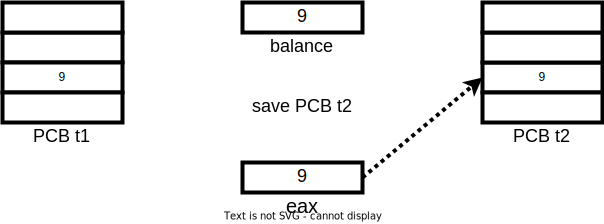
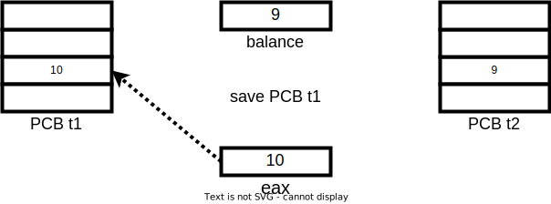
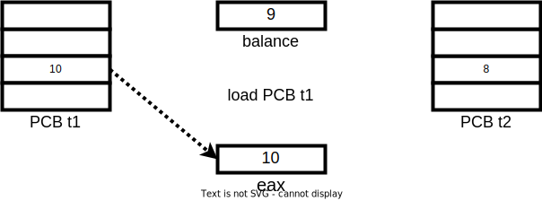
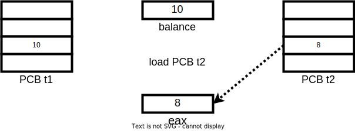
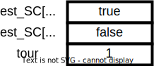

Systèmes d'exploitation
Synchronisation des processus et des threads
3A - Cursus Ingénieurs - Dominante Informatique et Numérique
CentraleSupelec - Université Paris-Saclay - 2024/2025
CentraleSupelec - Université Paris-Saclay - 2024/2025

Inter Process Communication - IPC
-
L’OS garantie l’indépendance des processus
- Par l’ordonnanceur CPU
- Par la gestion mémoire que l’on verra plus tard
-
Un processus peut communiquer avec un autre processus
ou avec des périphériques (fichiers, imprimantes, réseaux, ...). -
Il est alors nécessaire de mettre en oeuvre un
mécanisme
de communication inter-processus.
Principales méthodes
de communications
| Méthode | Description |
|---|---|
| Signal | Un message système est envoyé d’un processus à un autre. |
| Pipe | Un canal unidirectionnel ; les données émises sont accumulées dans une mémoire tampon (FIFO). |
| File | Lecture/Écriture dans un fichier. |
| Socket | Un flux de données envoyé à travers une interface réseau à un autre processus. |
| Mémoire Partagée | Espace de mémoire alloué à plusieurs processus. |
| Moniteur/Sémaphore | Une structure de synchronisation pour les processus travaillant sur des ressources partagées. |
Problème de la concurrence
- Soit la gestion d’un compte bancaire
- Une variable partagée
balance - Une fonction
add(1)(balance = balance + 1) - Une fonction
sub(1)(balance = balance - 1) - Le montant initial du compte est de
9€
- Une variable partagée
Problème de la concurrence
- Soient 2 threads en parallèle
- La première thread ajoute
10 000 000fois1€ - La deuxième thread soustrait
10 000 000fois1€
- La première thread ajoute
-
Résultat attendu:
balance = 9€ -
Résultat obtenu:
balance = -98599€
Problème de la concurrence
- Comment expliquer ces erreurs de calcul ?
- les entrelacements se font au niveau du code binaire
- couper entre chaque instruction assembleur

👉

👉

👉
👉

👉

👉

👉

👉

👉

👉
👉

👉

👉

👉

Problème de la concurrence
- Après une itération $\rightarrow$
balance = 8
Problème de la concurrence
- Situation de compétition
- erreur dépendant de l’enchaînement temporel d’événements
impliquant une ressource partagée - non déterministe
- difficile à détecter (tests)
- difficile à corriger (debug)
- erreur dépendant de l’enchaînement temporel d’événements
Section critique
- Lorsqu'il y a des variables partagées,
il existe des portions
de code qu'on ne veut pas pouvoir interrompre.- des zones du code qui manipulent des ressources partagées
- ces zones sont appelées sections critiques
Exclusion mutuelle
-
Lorsqu'on déclare une section critique,
on doit garantir
qu'au plus un seul processus/thread est dans la section critique.- besoin de gérer l’exclusion mutuelle des sections critiques.
- une seule section critique peut être exécutée à la fois.
- Pour résoudre ce problème il faut un système de verrou.
Les propriétés à respecter
-
Exclusion mutuelle :
si une thread effectue sa section critique,
alors aucune autre thread ne peut entrer en section critique. -
Déroulement : une thread qui souhaite entrer en section critique
ne peut pas décider qui doit rentrer en section critique. -
Vivacité : une thread qui souhaite entrer en section critique
y rentre en temps borné.
Définir des mécanismes qui garantissent ces trois propriétés
Une solution pour 2 threads
-
Principes
- un contrôleur central
- met en attente
- autorise les SC chacune à son tour
- respecte les 3 objectifs de la synchronisation
Une solution pour 2 threads
- Lorsque $t_{i}$ invoque
commencerSC(i):- Vérifier que $t_{1-i}$ n'est pas en SC (sinon, attendre)
- Noter que $t_{i}$ est en SC
-
Lorsque $t_{i}$ invoque
finirSC(i):- Noter que $t_{i}$ n'est plus en SC
Une première implémentation
évaluation

id=0 👉
id=0 👉
id=0 👉
id=0 👉
id=0 👉
👈 id=1
id=0 👉
👈 id=1
id=0 👉
👈 id=1
id=0 👉
👈 id=1
id=0 👉
👈 id=1

id=0 👉
👈 id=1

- Les deux threads sont en SC!
- Ce code contient lui-même des SC!
Une deuxième implémentation
évaluation
id=0 👉
id=0 👉
id=0 👉
id=0 👉
👈 id=1
id=0 👉
👈 id=1
id=0 👉
👈 id=1
id=0 👉
👈 id=1
id=0 👉
👈 id=1
- Problème $\to$ interblocage
Une troisième implémentation
évaluation

id=0 👉
id=0 👉
id=0 👉

id=0 👉

id=0 👉
👈 id=1
id=0 👉
👈 id=1
id=0 👉
👈 id=1
id=0 👉
👈 id=1

id=0 👉
👈 id=1
id=0 👉
👈 id=1
id=0 👉
👈 id=1
- Une seule thread est passée, l'autre est en attente
Attente active
- Les processus font de l'attente active.
- utilisation inutile du processeur
- Des mécanismes de haut niveau sont offerts par les OS
Mécanismes de haut niveau
| Méthode | Description |
|---|---|
| Signal | Un message système est envoyé d’un processus à un autre. |
| Pipe | Un canal unidirectionnel ; les données émises sont accumulées dans une mémoire tampon (FIFO). |
| File | Lecture/Écriture dans un fichier. |
| Socket | Un flux de données envoyé à travers une interface réseau à un autre processus. |
| Mémoire Partagée | Espace de mémoire alloué à plusieurs processus. |
| Moniteur/Sémaphore | Une structure de synchronisation pour les processus travaillant sur des ressources partagées. |
Moniteur
-
Un moniteur est un module constitué de:
- objets inaccessibles de l’extérieur
- fonctions manipulant l'objet en exclusion mutuelle
-
Dans la JVM de Java, on peut définir que des méthodes
d’une classe sont en exclusion mutuelle.- mot clef
synchronized: utilisation d’un verrou (lock)
- une seule thread dans un bloc
synchronizedpour un objet donné
- mot clef
Moniteurs en Java
-
Une thread qui possède un verrou peut rentrer
dans n'importe quelle méthode (verrou récursif). -
Une thread peut verrouiller plusieurs objets
(risque d'interblocage). -
Tout bloc non
synchronizedpeut être appelé
par n'importe qui n'importe quand.
Exemple
Sémaphore - Dijkstra - 1962
- Un sémaphore définit un objet partagé
- Qu'on peut acquérir;
- Qui met en attente ceux qui le demandent;
- Qui donne la main dans l'ordre des demandes.
-
Toutes les threads en concurrence sur une ressource
partagent un même sémaphore- On acquiert le sémaphore avant d'entrer en SC;
- On relâche le sémaphore en sortant de la SC.
Utilisation du Sémaphore
- Vivacité : on veut passer la main dans le bon ordre
- utilisation d'une file d'attente
-
acquireetreleasedoivent être atomiques !- elles sont elles-même des SC pour le sémaphore ...
implémentation du Sémaphore

L'exclusion mutuelle
Un sémaphore permettant de faire de l’exclusion mutuelle
est un sémaphore dont la valeur initiale est 1.
est un sémaphore dont la valeur initiale est 1.
Demi rendez-vous
Quand un processus veut s’assurer qu’un traitement a été réalisé
par un autre processus avant de réaliser le sien.
par un autre processus avant de réaliser le sien.
Rendez-vous
Permet à deux processus de définir un point de synchronisation.
Partage de $N$ ressources
Soient $N$ ressources disponibles et $P$ processus voulant
avoir accès à au moins l’une de ces ressources ($P>N$).
avoir accès à au moins l’une de ces ressources ($P>N$).
Inter-blocage (deadlock)
👉
👉
👉
👉
👉
👉
👉
👉
👉
👉
- Le programmeur doit s'assurer qu'il ne crée pas d'interblocage
Inter-blocage (Solution)
Synthèse
- Problème d'utilisation des ressources partagées
- Exemple : accès à une variable partagée
- Notion de section critique
- Propriétés d'exclusion mutuelle, de déroulement et de vivacité
- Problème de l'attente active
- Moniteurs
- Sémaphores